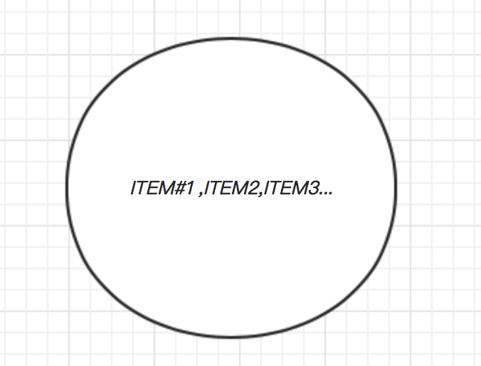

MySQL事务特点和四种隔离特性
目录:
1.简介
一个事务涉及到大量的CPU操作和IO操作,这些操作被打包成一个执行单元,要么同时完成,要么同时不完成.事务是一组原子性SQL命令或者说一个独立的工作单元,如果数据库引擎能够成功对数据库应用该组的全部SQL语句.那么就执行该组命令.如果其中任何一条语句因为崩溃或者其它原因无法执行,那么该组所有的SQL语句都无法执行.
可以这么理解事务.事务是一组TO DO LIST ,事务的每个操作都是TO DO LIST里面的一个ITEM项.
-------TO DO LIST--------
#1.item1
#2.item2
#3.item3
....
-------TO DO LIST END---
事务的具体执行做法就是,逐个执行ITEM( one by one ).如果其中某个ITEM出错则回滚(rollback).
2.事务特性
原子性
一个事务中的所有操作,要么都完成,要么都不执行.对于一个事务来说,不能只执行其中的一部分.

上图这个圆圈代表事务的原子性,一个不被打破的执行单元.
一致性
数据库总是从一个一致性状态转到另外一个一执行状态.
这个一执行状态怎么解释:银行账户300元(一致性状态),然后进行转出操作20元,那么目前银行帐户280(一致性转台)
隔离性
一个事务所做的修改在事务的最终提交之前,对其它事务是不可见的.多个事务之间的操作相互不影响,每降低一个事务隔离个别都能够提高数据库的并发.
持久性
一旦一个事务提交了,就算服务器崩溃,让要在下次启动的时候自动恢复.
结合事务日志完成:
事务日志写入磁盘的时候是顺序IO,写数据文件的时候是随机IO(数据地址不确定).一旦事务提交了,必须立即执行一个IO操作,确保此事务立即写入磁盘.
事务的状态:
活动(active) -----> 中止(pause/inactive)------> 活动 ------> 失败(failed) -------> 部分提交 -----> 提交
3.事务隔离级别
read uncommited (读未提交事务)
read commited (读已提交事务)
reputable read(可重复读)
serializable(可串行化)
脏读(dirty read): 读取到了其它事务未提交的内容
不可重复读(Nonrepetable read): 在同一个事务中,完全相同的select语句可能看到不一样的结果( so wired -_-!).
造成这样的结果可能原因:
(1) 有一个交叉的事务有新的commit,导致了数据的改变
(2) 一个数据库被多个实例操作时,同一事务的其它实例在该实例处理期间可能有新的commit
幻影读(phantom read): 读取某一个范围数据行的时候,另一个事务在该范围内插入了新行,当再一次读区这个范围的数据行时,会发现新的“幻影”行.
我个人称之为“眩晕读(duzzy read)”,因为这个感觉就像眼冒金星一样.第二次看到了新的东西(幻影行)
读未提交事务- read uncommited
(1)所有事务都可以看到其它事务未提交的执行结果 -------TMD不乱了套了吗
(2)存在问题: 脏读,不可重复读,幻读
执行顺序:
1.select * from tx ; # 事务1
| id | num |
|---|---|
| 1 | 1 |
| 2 | 2 |
| 3 | 3 |
2.update tx set num=10 where id=1 # 事务2
| id | num |
|---|---|
| 1 | 10 |
| 2 | 2 |
| 3 | 3 |
3.select * from tx; #事务1
| id | num |
|---|---|
| 1 | 10 |
| 2 | 2 |
| 3 | 3 |
可以看到事务1读到了事务2未提交的数据
读已提交事务- read commited
(1)一个事务只能看见已提交事务所做的改变
(2)存在不可重复读的问题
执行顺序:
1.select * from tx; #事务1
| id | num |
|---|---|
| 1 | 1 |
| 2 | 2 |
| 3 | 3 |
2.update tx set num=10 where id=1(不提交) #事务2
3.select * from tx; #事务1
| id | num |
|---|---|
| 1 | 1 |
| 2 | 2 |
| 3 | 3 |
因为事务2没有提交,所以事务2做的改变事务1看不见
可重复读 - read repeatable
(1)解决不可重复读
(2)问题:幻影读
| 隔离级别 | 脏读 | 不可重复读 | 幻读 |
|---|---|---|---|
| 读未提交 | y | y | y |
| 读已提交 | x | y | y |
| 可重复读 | x | x | y |
| 串行化 | x | x | x |
4.事务提交
如果没有显式启动事务,数据库会根据autocommit的值,默认每条sql都会自动提交
事务日志
事务要保证ACID完成性必须依靠事务日志跟踪,每一个操作在真正写入数据库之前,先写入到日志文件中.如果要删除一行数据会现在日志文件中将此行标记为删除,但是数据库中的文件并没有发生变化.只有在整个事务提交后,再把整个事务的sql语句批量同步到磁盘上的数据库文件.